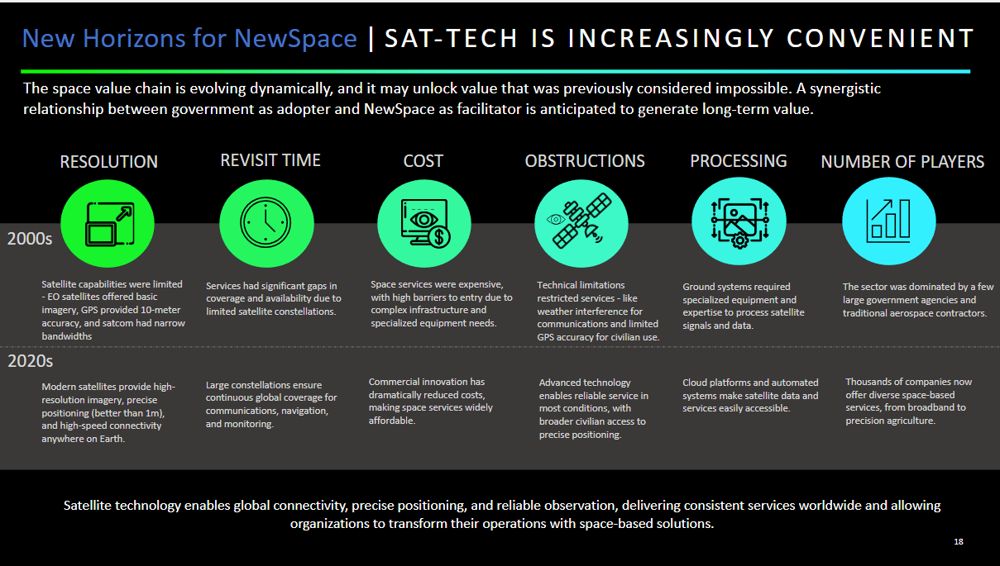

{{ reports.fields.title }}
{{ reports.fields.subtitle }}
{{ reports.fields.publicationdate }}
{{ reports.fields.publicationdate }}
Satellite technology is no longer the domain of large government agencies {{reports.fields.section1}}
In the 2000s, satellite capabilities were limited. Earth Observation (EO) satellites offered only basic imagery, GPS accuracy was in the tens of meters, and Satcom bandwidth was narrow and inconsistent. The costs of satellite services were prohibitively high, with few players dominating the industry.
Complex infrastructure and specialized expertise were required to process the data, creating significant barriers to entry for many public bodies.
Today, advancements in technology and the entry of private players have transformed the landscape. Modern satellites provide high-resolution imagery (enough to count the players on a cricket field), precise positioning better than 1 meter, and reliable global coverage. Large constellations ensure continuous monitoring and connectivity, enabling governments to access real-time data for critical applications. Costs have also fallen dramatically, making satellite services accessible to a broader range of users. Cloud-based systems and automated platforms have further simplified data processing, unlocking the potential for seamless integration into public sector operations.
The shift from a government-dominated space sector to one that incorporates private innovation is driving this transformation. "Space Data-as-a-Service" models are now enabling governments to access satellite data that is affordable, customizable, and regular. The space economy is expected to grow to $1.8 trillion by 2035, and private companies are delivering high-quality data directly to their customers, ensuring that even smaller nations and sectors can benefit.
With these advancements, satellite technology has become the backbone of modern governance—enabling global connectivity, precise positioning, and reliable observation. It empowers public bodies to make informed decisions, deliver essential services, and transform their operations for the benefit of citizens worldwide.
Satellite technology empowers governments to build resilience, improve oversight, and foster transformation across public services.

Every government has a mandate to monitor and manage vast areas effectively. Satellite technology offers advanced solutions for oversight by providing real-time data and predictive insights. From identifying illegal land encroachments and monitoring deforestation to enhancing urban planning, satellite-enabled systems ensure compliance and efficiency in public administration. In public safety, automated anomaly detection and geospatial tools help secure critical infrastructure and respond rapidly to emerging threats.
Satellite technology helps to ensure preparedness for natural disasters, supply chain disruptions, and health crises. By amalgamating weather monitoring, environmental analysis, and AI, governments can predict vulnerabilities such as flooding, disease outbreaks, and resource scarcity. During emergencies, satellite communication ensures connectivity in remote or disaster-prone areas, enabling rapid response and recovery efforts.
Governments can leverage satellite data to harmonize economic growth with environmental sustainability. Advanced systems provide precision analytics for supply chain optimization, sustainable agriculture, and resource management. By monitoring crop health, identifying irrigation needs, and tracking environmental impacts, governments can ensure the equitable use of resources while protecting ecosystems and meeting climate goals.
Satellite technology elevates the quality and precision of decision-making across domains that demand nuanced insights. In banking and finance, satellite-driven analytics assess agricultural risks, stabilize commodity prices, and accelerate insurance claims after disasters. For environmental protection, customized monitoring helps detect illegal activities like deforestation or unregulated mining, ensuring regulatory compliance and ecosystem preservation. In border and maritime security, persistent satellite surveillance prevents unauthorized activities like smuggling and illegal fishing, even under adverse conditions.
Satellite technology is at the heart of transformative governance, offering innovative solutions across taxation, logistics, and public services. By utilizing satellite imagery, governments can maintain accurate property records, streamline tax collection, and minimize revenue losses due to evasion. In transportation, satellites optimize traffic flow, reduce congestion, and enable efficient freight movement, significantly improving mobility in urban areas. In healthcare, satellite connectivity supports telemedicine, bridging gaps in remote and underserved regions. For instance, doctors in urban centers can provide real-time consultations and diagnostics to remote patients, ensuring equitable access to quality healthcare.
Following a structured pathway that balances technological readiness, economic feasibility, and policy alignment can help governments and public sector organisations to meaningfully integrate satellite technology into their operations. This pathway progresses from leveraging basic data services to achieving self-sufficiency with advanced satellite constellations.
A well-functioning downstream ecosystem supports value creation by enhancing data access, catalyzing innovation, and driving infrastructure investments. Governments typically follow three stages of adoption:
Governments must align their adoption strategies across multiple levels of governance to maximize impact: